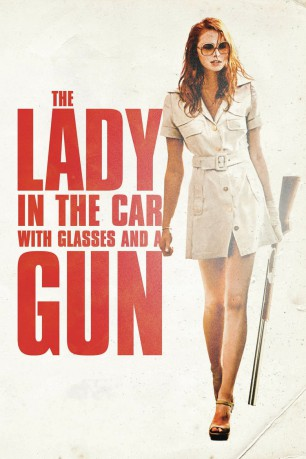

#8394 The Lady in the Car with Glasses and a Gun
 
 IMDB-Wertung: 5.5 / 10
IMDB-Wertung: 5.5 / 10  Metascore: 0
Metascore: 0 
Die Handlung dreht sich um eine Sekretärin, die im Wagen ihres Chefs in den Urlaub ans Mittelmeer fährt und dort von Menschen erkannt wird, die ihr gänzlich unbekannt sind. Als dann auch noch eine Leiche in ihrem Kofferraum auftaucht, beginnt sie langsam, an ihrem Verstand zu zweifeln.
Jahr: 2015
Dauer: 94 Minuten
FSK: 16
Land: Frankreich Studio: Sunfilm EntertainmentTonspuren:
Untertitel: Deutsch,
Auflösung: 1080p (1920x808) Größe: 2867 MB
Genre: Thriller, Drama, Mystery
Regisseur: Joann Sfar
Drehbuch: Gilles Marchand
Soundtrack: Agnès Olier
Darsteller:
- Freya Mavor als Dany Dorémus
- Benjamin Biolay als Michel Caravaille
- Elio Germano als Stefano, dit Georges (Le jeune homme aux yeux noirs)
- Stacy Martin als Anita
- Thierry Hancisse als Le garagiste
- Olivier Bonjour als Le motard
- Cécile Delberghe als La femme avec le jeune homme
- Sandrine Laroche als La femme du garagiste
- Frederic Etherlinck als Un type de la station service
- Alain Bellot als L'autre type de la station service
- Édouard Giard als Le routier bouquet de violettes
- François-Dominique Blin als Le routier du relais
- Noémie Morales als Sylvie
- Lou Lambrecht als La petite fille du garagiste
- Vera Van Dooren als La dame qui a vu
- Chloé de Grom als La jolie brune
- Inès Dubuisson als La fille au chignon
- Alexandre von Sivers als Le réceptionniste de l'hôtel
- Karen Monluc als La vendeuse de la boutique
- Benjamin Ramon als Le chauffeur #2
- Laurent Giordano als Le chauffeur de camion #3
- Eléo Solet als Bertrand, l'enfant sur la plage
- Jacob Zegwaard als Le chauffeur camion lavandes
- Christophe Blain als Kaub
- Egon Di Mateo als Le pompiste
- Guillaume Gallo-Manrique als Le pompiste Sub
- Charles François als Le garçon d'hôtel
- Arnaud Peiffer als Le groom
- Olivier Printz als Le chauffeur de taxi Marseille
- Stéphanie Lequien als La mère dans la voiture
- Aline Obadia als Silhouette préparation
- Thierry Boisset als Le père dans la voiture
Datei: X:\2015(G-M)\Lady in the Car with Glasses and a Gun, The (2015, FSK16, 1920x808).mkv seit 28.02.2018
Festplatte: HD 2015(A-Z)
 Es gibt insgesamt 129 Filme in der Gruppe '2015(G-M)'
Es gibt insgesamt 129 Filme in der Gruppe '2015(G-M)'